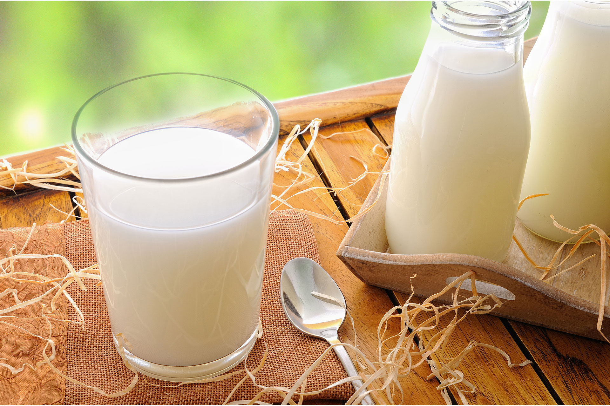
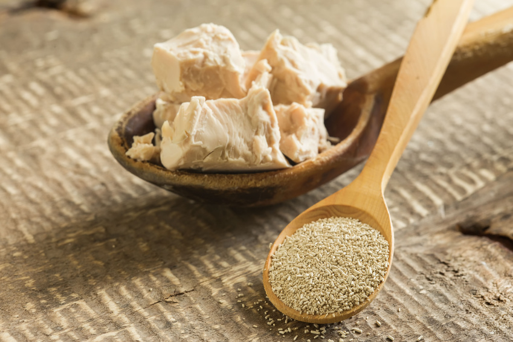

Добро пожаловать!
Пекарня Дося - это фамильная пекарня, в которой опыт предков передавался из поколения в поколения пока не был совмещен с современными технологиями. Лучшее из лучшего для лучших из лучших, что может быть лучше!
Мука
Каждое зернышко прошло проверку у Путина.
Молоко
Лучшее молоко от лучших коровок. Химии ноль - корпорации долой.
Дрожжи
Сначала поднимут тесто, а потом ваше настроение! Сочные, вкусные булочки. Ммм!